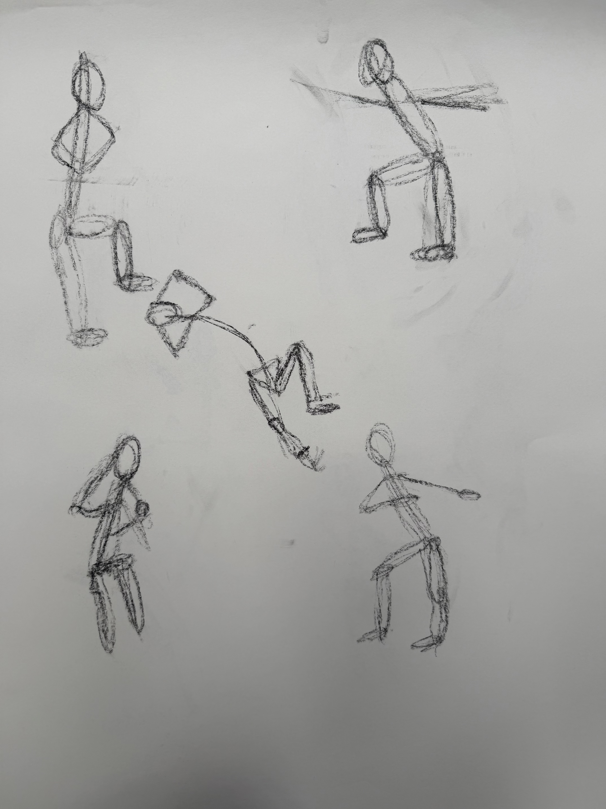

Smudge
Process fragment
Graphite and conte residue from gestural drawings. These marks capture the physical evidence of the drawing process.
Study Collection

Smudge Study 01: In motion Gesture

Smudge Study 02: In motion Figures

Smudge Study 03: Gesture Series

Smudge Study 04: Anatomical Proportions

Smudge Study 05: Standing Figure